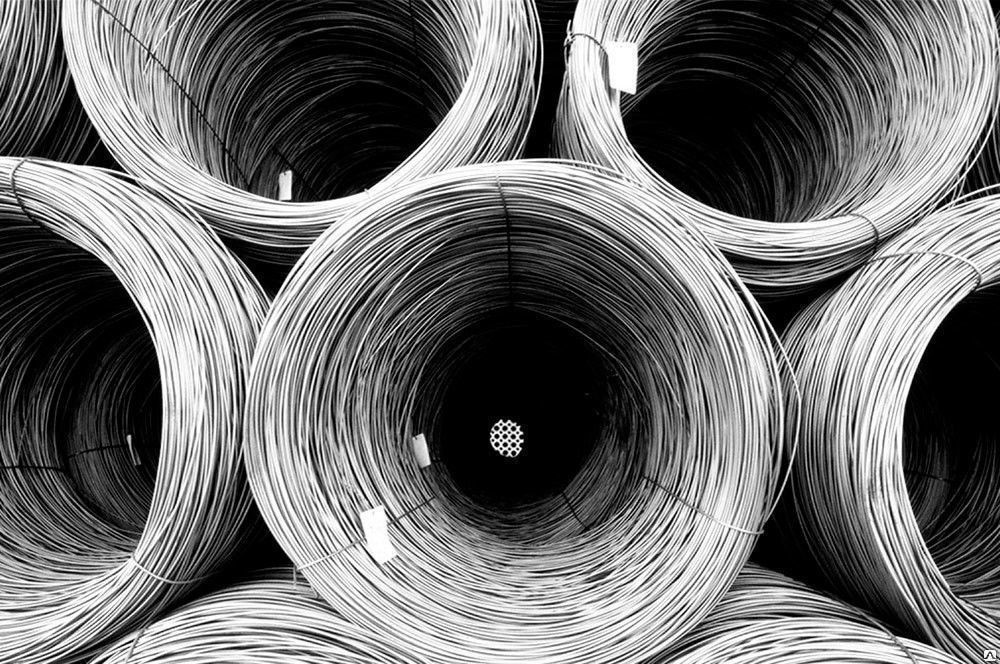

Катанка
Катанка – это вид металлопроката, который представляет собой проволоку круглого сечения, изготовленную из углеродистых марок стали Ст0, Ст1, Ст2 и Ст3, в соответствие с ГОСТ 380, или из цветных металлов или сплавов цветных металлов в соответствие с принятым ТУ.
Катанка из углеродистой стали выпускается с диаметром 5,0; 5,5; 6,0; 6,3; 6,5; 7,0; 8,0 и 9,0 мм. При этом допускается отклонения в диаметре +/- 5%, а овальность катанки допускается не более 50% от ее диаметра. Катанка из цветных металлов (медь, алюминий) или их сплавов (бронза, латунь) изготавливается с диаметром от 1 до 16 мм.
Проволока вязальная ГОСТ 3282-74 изготавливается из низкоуглеродистой стали с применением термообработки. Проволока Вр-1 ГОСТ 6727-80 разновидность стального проката периодического профиля, используемая для создания железобетонных конструкций из низкоуглеродистой стали.
